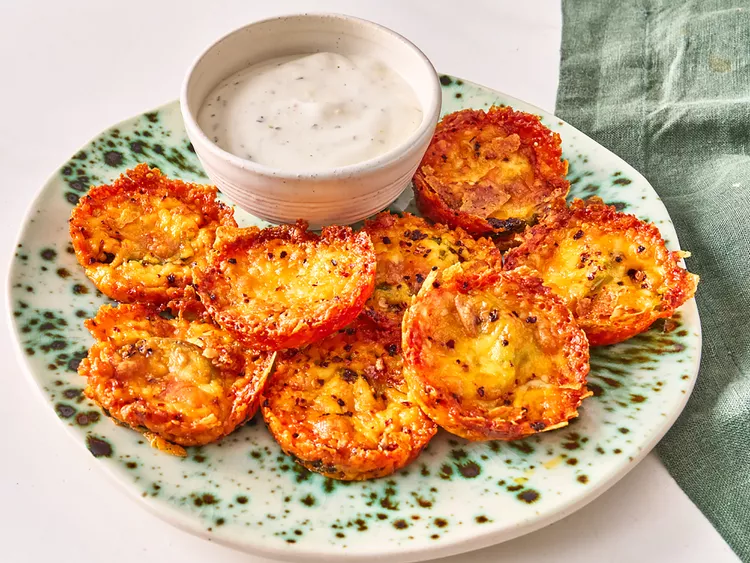

Cheesy Pickle Chips

Back to Recipes
Description
These cheesy pickle chips are a delicious and crunchy snack, perfect for parties or game day!
Ingredients
- 1 jar of dill pickles
- 1 cup shredded cheddar cheese
- 1/2 cup breadcrumbs
- 1/4 cup grated Parmesan cheese
- 1 teaspoon garlic powder
- 1 teaspoon onion powder
- Salt and pepper to taste
- Oil for frying
Instructions
- Preheat the oven to 400°F (200°C).
- Drain the pickles and pat them dry with paper towels.
- In a bowl, mix together the breadcrumbs, cheddar cheese, Parmesan cheese, garlic powder, onion powder, salt, and pepper.
- Dip each pickle slice into the breadcrumb mixture, coating it well.
- Place the coated pickles on a baking sheet lined with parchment paper.
- Bake for 15-20 minutes or until golden brown and crispy.
- Serve hot with your favorite dipping sauce.